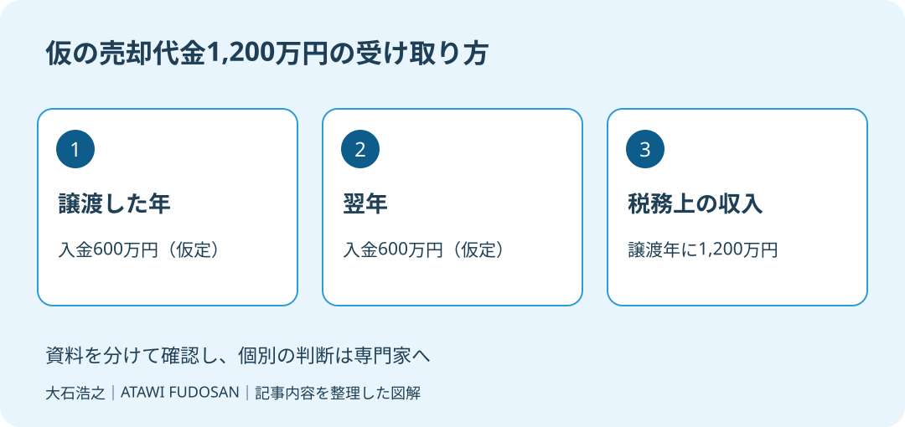

買主から「代金の半分は今年、残りは来年に払いたい」と言われた。価格には納得していても、手元に残るお金と税金の時期が見えなければ、売主は承諾しづらいはずです。入金を分けることと、税務上の収入を分けることは、同じではありません。
大石浩之（磐田市／不動産業）です。宅地建物取引士として、売却代金の額面だけで判断しないよう案内します。2026年10月10日に確認した国税庁の説明をもとに、契約前に家族と税理士へ示したい数字を整理します。
分割入金でも収入金額は譲渡年へ
国税庁タックスアンサーNo.3214は、一つの契約に基づく土地などの代金を2年以上に分けて受け取る場合を説明しています。その場合、売却代金の全額が、土地建物を譲渡した年の収入金額になります。資料の法令等の基準日は2026年4月1日です。
未入金の部分まで譲渡年の収入金額になる点は、家計の感覚とずれます。通帳には半額しか入っていなくても、税務上の収入金額を同じ半額として考えてよいわけではありません。私は、分割払いの相談では、このずれを最初に紙に書きます。
この説明の対象は、一つの契約に基づく代金の受け取り方です。契約した年と引き渡した年が違う場合に、どの年の譲渡として扱うかという話とは区別します。譲渡時期の確認は、不動産売却が年をまたぐ場合の申告も参照し、契約内容を税理士に見せます。
「年を分けたから、その年に入った額だけを申告すればよい」と考えて条件を決めないことです。入金予定表には銀行に入る金額を書き、税務の相談用には契約上の代金総額を書く。二つの欄を作るだけでも、質問が具体的になります。

売却代金と課税される利益を混同しない
売却代金全額が収入金額になるという説明は、全額がそのまま税金計算の対象となる利益だという意味ではありません。国税庁No.3214が扱うのは「収入金額に含める金額」です。この記事では個別の税額計算や特例適用までは確定しません。
私なら、税理士へ代金総額だけを口頭で伝えて終わりにはしません。買ったときの契約書、売却の契約案、費用の資料、所有や利用の経緯を一組にします。何を費用として扱えるか、どの資料が不足しているかを先に聞き、納税資金の見込みを依頼します。
売主の家計では、税金以外の支出も同時に動きます。仲介の費用、借入金の返済、片付けや引越しなど、実際に予定しているものを書き出します。費用の税務上の扱いと、現金が出ていく事実は別です。すべてが税金計算で差し引けると決めつけません。
家族に渡すお金を先に約束する前に、売却を手取り額で考える記事のように、入金と出金の両側を確認します。私は「いくらで売れたか」だけでなく、「いつ、自由に使えるお金がいくら残るか」を家族の判断材料にしたいと考えます。
仮の1200万円で手元資金を比べる
分割払いによる資金のずれは、仮の売却代金1,200万円で見ると整理できます。ここでは2026年に譲渡し、2026年に600万円、2027年に600万円を受け取ると仮定します。実在する取引事例でも、地域の相場でもありません。
| 確認する数字 | 2026年 | 2027年 |
|---|---|---|
| 入金予定額 | 600万円 | 600万円 |
| この契約代金の収入金額 | 1,200万円 | 分割受領分を重ねて計上しない |
国税庁の説明をこの仮定に当てはめると、譲渡年の収入金額は600万円ではなく1,200万円です。ただし、税額がいくらかはこの表から出せません。譲渡時期、取得や売却の資料、特例などの確認を経て、税理士に計算してもらう必要があります。
家計の試算として、最初の入金600万円から、当面の支出を仮に200万円確保するとします。残るのは600万円引く200万円で400万円です。200万円は税額の例ではなく、家族が必要とする支出の仮置きです。残り400万円で納税などに足りるかは別に検討します。
さらに、2027年の600万円が納税に必要な時期より後に入るなら、入金前の資金をどこから用意するかが残ります。実際の納期限と入金日は税理士に確認します。「来年入る」という年単位の説明を、月日まで書いた予定へ直す理由はここにあります。
私は、分割払いを一律に否定するつもりはありません。ただ、将来の入金を、今ある預金と同じ扱いにはしません。家族がすでに使い道を決めている金額ほど、入金が遅れた場合も資金が足りるかを別の欄で確認します。
分割払いの良さと、売主からの注文
分割払いの条件には、買主の資金事情に合わせて交渉を続けられる面があります。これは私の実務上の評価です。売主が事情を理解し、必要な資金を確保できるなら、受け取り方を調整すること自体を最初から排除する必要はないと考えます。
そのうえで私が注文したいのは、税金の話だけで承諾を決めないことです。残代金の支払日、引渡しや登記との関係、支払いが止まった場合の対応を、契約前に整理します。どのような担保や契約条件が適するかは、弁護士や司法書士へ確認します。
買主の「必ず払える」という説明を疑うか信じるかの二択にしません。何を資料で確認でき、どこが将来の約束なのかを区別する話です。支払日を口頭だけで済ませず、合意した条件が書面にどう表れるかを双方で確かめます。
物件の状態についても、代金の支払い方とは別に説明が必要です。契約不適合責任を確認する記事も参照し、後で修理費などを巡る意見の違いが出たときの扱いを専門家へ相談します。分割払いだけ整えば契約全体が整うわけではありません。
私は、どこまでの分割なら売主に無理がないか、代金総額だけでは答えられません。手元資金、必要な支払い、残代金の条件で答えが変わるからです。税額が分からない段階では仮の承諾も急がず、判断に必要な数字を先に揃えたいと思います。
磐田・袋井で契約前にそろえる一枚
磐田市・袋井市で分割払いを提案された売主には、代金総額、入金日と額、支出予定、税理士への質問を一枚にする方法を提案します。今日できる確認は、買主の提案を「今年と来年」から具体的な日付へ直してもらうことです。
私はこう考えます。家族が食卓で売却後の資金を相談するなら、契約額を大きく書くより、月ごとの残高を並べたい。入居費や住み替え費用が先に出るなら、未入金のお金はその月の残高へ足しません。税額が未確定の欄には、ゼロではなく「確認中」と書く。これは経験談の再現ではなく、額面の数字を家族の支払いへ翻訳するための私の提案です。
国土交通省が2026年9月4日に案内した住生活月間は、10月1日から31日までです。年をまたぐ条件を見直す機会としてこの記事を出しています。分割払いの税務の扱いが、この月に新設されたという意味ではありません。
- 受取予定は年月日と金額で書く。
- 税額と納税時期は税理士に確認する。
- 残代金が遅れた場合も資金が足りるか検討する。
富士ヶ丘サービスは磐田・袋井で介護と不動産を一体で考え、家族が困らない売却を支えます。私は代金の高さより、支払いに困らない受け取り方を先に確認します。税務、登記、契約の個別判断は、税理士・司法書士・弁護士などの専門家に確認してください。
磐田市・袋井市では、介護施設の運営から不動産事業を始めた富士ヶ丘サービスのような地域密着の会社に、売却前の資料整理から相談する選択肢があります。